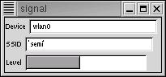

signal
What is it?
This is a demonstration of grabbing data from the linux-wlan-ng 'wlanctl-ng'
utility for display in a GUI window. It's really just a hack, but it does have
a useful function which you might be able to adapt to other applications.
Screenshot
This is what signal looks like

Downloading
Get it here: signal-0.02.tar.gz
Return to Linux page.
Last Updated
:2002-09-24
Comments to:
Eric Brombaugh